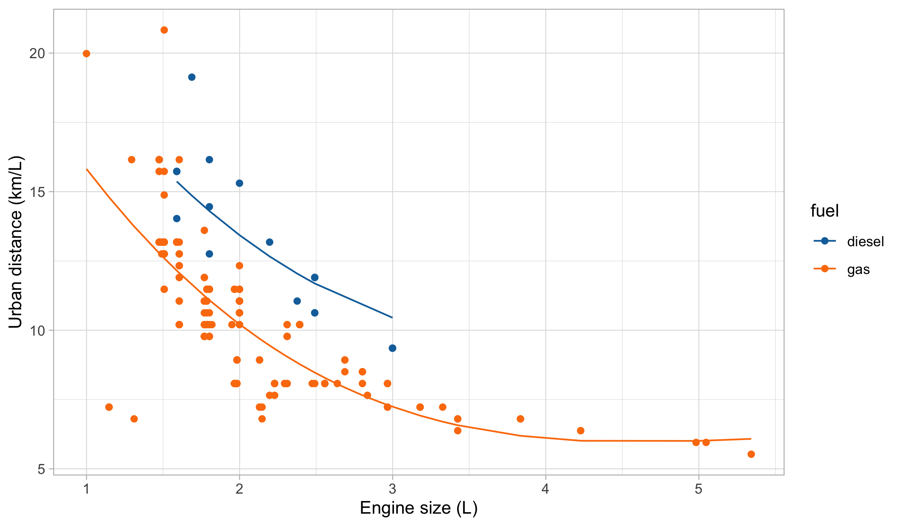
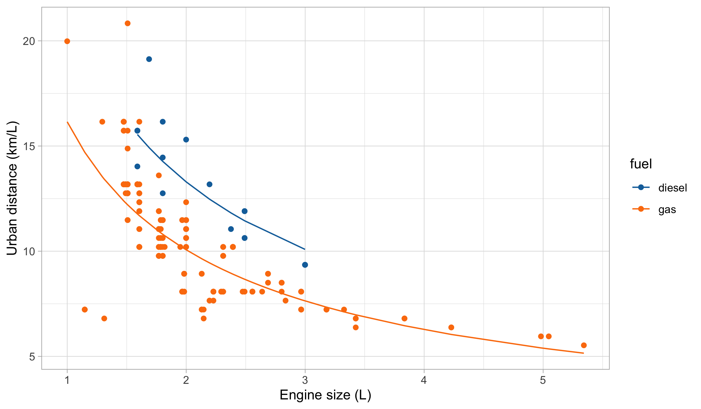

A-B-C
Data Mining - CdL CLAMSES
About this unit
 “Everything should be made as simple as possible, but not simpler” Attributed to Albert Einstein
“Everything should be made as simple as possible, but not simpler” Attributed to Albert Einstein
In this unit we will cover three important topics:
- Linear models and modelling process
- Computational aspects
- Generalized linear models (GLMs)
The computational aspects of linear models will be novel to most of you…
… but you should be already very familiar with linear models and GLMs!
If do not remember much about them, use this first week of lectures to catch up (or study) from the material of previous courses.
Old friends: linear models
Car data
- We consider data for n = 203 models of cars in circulation in 1985 in the USA.
- We want to identify a relationship that allows to predict the distance covered per unit of fuel, as a function of the vehicle characteristics.
- We consider the following continuous variables:
- The city distance per unit of fuel (km/L,
city.distance) - The engine size (L,
engine.size) - The number of cylinders (
n.cylinders) - The curb weight (kg,
curb.weight)
- The city distance per unit of fuel (km/L,
- We also considered the categorical variable fuel type (gasoline or diesel,
fuel).
Car data (diesel or gas)
Linear regression
At the moment, let us focus on
city.distance(y),engine.size(x) andfuel(z).The simplest model we can come up with is a linear regression line: y = \beta_0 + \beta_1 x + \epsilon, where \epsilon is a non-observable “error” term, having zero mean and variance \sigma^2.
We are looking for an estimate for the unknown regression parameters \beta_0 and \beta_1.
Such an estimate could be obtained by ordinary least squares (OLS)…
… but the next plot clearly suggests that the relationship between
city.distanceandengine.sizeis not well approximated by a linear function.… and also that
fuelhas an non-negligible effect on the response.
Scatterplot of the data

Regression models
- A more general formulation for modeling the relationship between a vector of covariates \bm{x} = (x_1,\dots,x_p)^T \in \mathbb{R}^p and a response y \in \mathbb{R} is y = f(\bm{x}; \beta) + \epsilon.
- To estimate the unknown parameters \beta, a possibility is to rely on least squares criterion: we seek the minimum of the objective function D(\beta) = \sum_{i=1}^n\{y_i - f(\bm{x}_i; \beta)\}^2, using n pairs of observations (\bm{x}_i, y_i), for i = 1,\dots,n.
- The solution to this minimization problem is denoted by \hat{\beta}.
- The predicted values \hat{y}_i are then obtained as \hat{y}_i = f(\bm{x}_i; \hat{\beta}), for i=1,\dots,n.
Linear models
There are several directions to model
city.distance(y),engine.size(x) andfuel(z) in a more flexible way.For instance, we could consider a polynomial term combined with a dummy variable f(\bm{x}; \beta) = \beta_0 + \beta_1 x + \beta_2 x^2 + \beta_3 x^3 + \beta_4 I(z = \texttt{gas}).
Remark. This model is linear in the parameters, but it can capture non-linear patterns!
Matrix notation
It is often convenient to express the quantities of linear models in matrix notation.
The response values are \bm{y} = (y_1,\dots,y_n)^T.
The design matrix is a n \times p matrix, comprising the covariate’s values, defined by \bm{X} = (\bm{x}_1, \dots,\bm{x}_n)^T = \begin{bmatrix} 1 & x_{1,1} & \cdots & x_{1,p-1}\\ \vdots & \vdots & \ddots & \vdots \\ 1 & x_{n, 1} & \cdots & x_{n, p-1} \end{bmatrix}.
Thus, the linear model can be written using the compact notation: \bm{y} = \bm{X}\beta + \bm{\epsilon}, where \bm{\epsilon} = (\epsilon_1,\dots,\epsilon_n)^T is a vector of iid error terms with zero mean and variance \sigma^2.
Linear regression: estimation I
The optimal set of coefficients \hat{\beta} is the minimizer of the least squared criterion D(\beta) = (\bm{y} - \bm{X}\beta)^T(\bm{y} - \bm{X}\beta) = ||\bm{y} - \bm{X}\beta||^2, where ||\bm{y}|| = \sqrt{y_1^2 + \cdots + y_n^2} is the Euclidean norm.
The quantity D(\beta) is also known as residual sum of squares (RSS).
Linear regression: estimation II
Consequently, the predicted values are \hat{\bm{y}} = \bm{X}\hat{\beta} = \bm{P}\bm{y}, \qquad \bm{P} = \bm{X}(\bm{X}^T\bm{X})^{-1}\bm{X}^T.
\bm{P} is a n \times n projection matrix matrix sometimes called hat matrix. It can be shown that \text{tr}(\bm{P}) = \text{rk}(\bm{P}) = p. Moreover, it holds \bm{P} = \bm{P}^T and \bm{P}^2 = \bm{P}.
The quantity D(\hat{\beta}) is the deviance, which is equal to D(\hat{\beta}) = ||\bm{y} - \hat{\bm{y}}||^2 = \bm{y}^T(I_n - \bm{P})\bm{y}.
A typical estimate for the residual variance \sigma^2 is then given by s^2 = \frac{D(\hat{\beta})}{n - p} = \frac{1}{n-p}\sum_{i=1}^n(y_i - \bm{x}_i^T\hat{\beta})^2.
Linear regression: inference
Let us additionally assume that the errors follow a Gaussian distribution: \epsilon_i \overset{\text{iid}}{\sim} N(0, \sigma^2).
This implies that the distribution of the estimator \hat{\beta} is \hat{\beta} \sim N_p(\beta, \sigma^2 (X^TX)^{-1}).
Hence, the estimator \hat{\beta} is unbiased and its variance can be estimated by \widehat{\text{var}}(\hat{\beta}) = s^2 (X^TX)^{-1}.
The standard errors of the components of beta correspond to the square root of the diagonal of the above covariance matrix.
Confidence interval and Wald’s tests can be obtained through classical inferential theory.
Car data, a preliminary model
A first model to predict
city.distance(y) viaengine.size(x) andfuel(z) is f(\bm{x}; \beta) = \beta_0 + \beta_1 x + \beta_2 x^2 + \beta_3 x^3 + \beta_4 I(z = \texttt{gas}).By looking at the plot of the data, it is plausible that we need a polynomial of degree 3 or 4
It is also clear from the plot that
fuelis a relevant variable. Categorical variable should be encoded using indicator variables.
- To evaluate the goodness of fit, we can calculate the coefficient of determination:
R^2 = 1 - \frac{\text{(``Residual deviance'')}}{\text{(``Total deviance'')}} = 1 - \frac{\sum_{i=1}^n (y_i - \hat{y}_i)^2}{\sum_{i=1}^n(y_i - \bar{y})^2}.
A first model: estimated coefficients
- We obtain the following summary for the regression coefficients \hat{\beta}.
| term | estimate | std.error | statistic | p.value | conf.low | conf.high |
|---|---|---|---|---|---|---|
| (Intercept) | 28.045 | 3.076 | 9.119 | 0.000 | 21.980 | 34.110 |
| engine.size | -10.980 | 3.531 | -3.109 | 0.002 | -17.943 | -4.016 |
| I(engine.size^2) | 2.098 | 1.271 | 1.651 | 0.100 | -0.409 | 4.604 |
| I(engine.size^3) | -0.131 | 0.139 | -0.939 | 0.349 | -0.406 | 0.144 |
| fuelgas | -3.214 | 0.427 | -7.523 | 0.000 | -4.057 | -2.372 |
- The coefficient R^2 and s are estimated as follows:
| r.squared | sigma | deviance |
|---|---|---|
| 0.5973454 | 1.790362 | 634.6687 |
A first model: fitted values

A first model: graphical diagnostics

Variable transformation
A major advantage of linear models is that they can exploit non-linear relationship via variable transformations.
This gives the statistician an lot of modelling flexibility, for instance:
\log{y} = \beta_0 + \beta_1 \log{x} + \beta_2 I(z = \texttt{gas}).
- This specification is linear in the parameters, it fixes the domain issues, and imposes a monotone relationship between engine size and consumption.
| term | estimate | std.error | statistic | p.value | conf.low | conf.high |
|---|---|---|---|---|---|---|
| (Intercept) | 3.060 | 0.047 | 64.865 | 0 | 2.967 | 3.153 |
| I(log(engine.size)) | -0.682 | 0.040 | -17.129 | 0 | -0.760 | -0.603 |
| fuelgas | -0.278 | 0.038 | -7.344 | 0 | -0.353 | -0.203 |
Second model: fitted values

Second model: graphical diagnostics

Comments and criticisms
- The goodness of fit indices are the following:
| r.squared.original | r.squared | sigma | deviance |
|---|---|---|---|
| 0.5847555 | 0.6196093 | 0.1600278 | 5.121777 |
- Apple and oranges: the R^2 must be computed and compared using the same scale!
This second model is more parsimonious and yet it reaches similar predictive performance.
It is also more coherent with the nature of the data: the predictions cannot be negative and the relationship between engine size and the consumption is monotone.
There is still some heteroschedasticity in the residuals — is this due to a missing covariate that has not been included into the model?
A third model: additional variables
- Let us consider two additional variables:
curb.weight(w) andn.cylinders(v). A modified model could be: \log{y} = \beta_0 + \beta_1 \log{x} + \beta_2 \log{w} + \beta_3 I(z = \texttt{gas}) + \beta_4 I(v = 2).
| term | estimate | std.error | statistic | p.value | conf.low | conf.high |
|---|---|---|---|---|---|---|
| (Intercept) | 9.423 | 0.482 | 19.549 | 0.000 | 8.472 | 10.373 |
| I(log(engine.size)) | -0.180 | 0.051 | -3.504 | 0.001 | -0.281 | -0.079 |
| I(log(curb.weight)) | -0.943 | 0.072 | -13.066 | 0.000 | -1.085 | -0.800 |
| fuelgas | -0.353 | 0.022 | -15.934 | 0.000 | -0.396 | -0.309 |
| cylinders2TRUE | -0.481 | 0.052 | -9.301 | 0.000 | -0.584 | -0.379 |
A third model: graphical diagnostics

Comments and criticisms
- The goodness of fit greatly improved:
| r.squared.original | r.squared | sigma | deviance |
|---|---|---|---|
| 0.869048 | 0.8819199 | 0.0896089 | 1.589891 |
We took care of the outliers, which it turns out are identified by the group of cars having 2 cylinders.
The diagnostic plots are also very much improved, although still not perfect.
- The estimates are coherent with our expectations, based on common knowledge. Have a look at the textbook (A&S) for a detailed explaination about \beta_4!
Computational aspects
How to obtain the least squares estimate?
In undergraduate courses it is often suggested that the least square estimate should be computed using the formula \hat{\beta} = (\bm{X}^T\bm{X})^{-1}\bm{X}^T \bm{y}, that is, using the R code
solve(t(X) %*% X) %*% t(X) %*% y.This is theoretically correct and it works reasonably well in many simple cases.
However, in real life, when we have a lot of data (large n) and correlated variables, the above code is computationally inefficient and numerically inaccurate.
The main computational bottleneck is about obtaining the inverse of \bm{X}^T\bm{X}, which is very costly and often numerically unstable, especially when the predictors are almost collinear.
The normal equations
Consider the following system of equations (normal equations): \bm{X}^T\bm{X} \beta = \bm{X}^T \bm{y}.
This system could be solved using
solve(crossprod(X), crossprod(X, y)).The above R command avoids the computation of (\bm{X}^T\bm{X})^{-1} and it is preferable compared to the “direct solution”. However, it does not exploit the properties of the matrix \bm{X}^T\bm{X}.
Cholesky factorization
- Recall (from your favorite linear algebra textbook) that a symmetric matrix \bm{A} \in \mathbb{R}^{p \times p} is positive definite if and only if one the following properties is satisfied
- The quadratic form \bm{x}^T \bm{A} \bm{x} > 0 for all \bm{x} \in \mathbb{R}^p \neq 0.
- The eigenvalues \lambda_1,\dots,\lambda_p of \bm{A} are all strictly positive.
Cholesky factorization and least squares
Let \bm{R}^T\bm{R} be the Cholesky factorization of the matrix \bm{X}^T\bm{X}. Then, the normal equations can be written as \bm{R}^T\bm{R} \beta = \bm{X}^T \bm{y}, which can be can be solved in two steps.
Step 1 (Forwardsolve). Solve with respect to z the system of equations \bm{R}^T z = \bm{X}^T \bm{y}.
Step 2 (Backsolve). Given z, now solve with respect to \beta the system of equations \bm{R} \beta = z.
Forward and backward substitutions
The solution of triangular systems is straightforward.
As an example, consider the following 3 \times 3 lower triangular system: \begin{bmatrix} l_{11} & 0 & 0 \\ l_{21} & l_{22} & 0 \\ l_{31} & l_{32} & l_{33} \\ \end{bmatrix} \begin{bmatrix} x_1 \\ x_2 \\ x_3 \end{bmatrix} = \begin{bmatrix} b_1 \\ b_2 \\ b_3 \end{bmatrix}.
The solution for x_1,x_2,x_3 can be found sequentially: x_1 = \frac{b_1}{l_{11}}, \qquad x_2 = \frac{b_2 - l_{21}x_1}{l_{22}}, \qquad x_3 = \frac{b_3 - l_{31}x_1 - l_{32}x_2}{l_{33}}.
- Finding the inverse \bm{R}^{-1} is simple, again because \bm{R} is upper triangular. Also note that (\bm{X}^T \bm{X})^{-1} = (\bm{R}^T \bm{R})^{-1} = \bm{R}^{-1} (\bm{R}^{-1})^T.
Computational complexity
The solution via Cholesky factorization is a fast direct approach for finding \hat{\beta}.
The expensive steps are:
- The formation of the matrix \bm{X}^T\bm{X} requires \sim n p^2 elementary operations
- The Cholesky factorization of \bm{X}^T\bm{X} requires \sim p^3 / 3 elementary operations.
This gives an overall computational complexity of order \sim n p^2 + p^3 /3, which corrects the typographical error of the A&S textbook.
This means that in high-dimensional settings (large p) computations become rapidly very costly, being cubic in p.
Error propagation in normal equations
- The normal equations method is typically quicker than other algorithms, as it removes the dependency on n, but it is in general numerically more unstable.
Consider for example the following matrix: \bm{X} = \begin{bmatrix}1 & 1 \\ \epsilon & 0 \\ 0 & \epsilon \end{bmatrix}, for a small value \epsilon > 0. Then, we obtain that \bm{X}^T \bm{X} = \begin{bmatrix}1 + \epsilon^2& 1 \\ 1 & 1 + \epsilon^2 \end{bmatrix}.
The numerical computation of \epsilon^2 in \bm{X}^T\bm{X} requires a higher precision compared to \epsilon, leading to numerical instabilities and/or a loss in accuracy.
Condition numbers and normal equations
Suppose \bm{X} \in \mathbb{R}^{n \times p} with n \ge p has full rank and singular values d_1 \ge d_2 \ge \dots \ge d_p. Then its condition number is \kappa(\bm{X}) = ||\bm{X}|| \cdot ||\bm{X}^+|| = \frac{d_1}{d_p}, where \bm{X}^+ is the Moore-Penrose pseudo-inverse. Note that \kappa(\bm{X}) \ge 1.
If \kappa(\bm{X}) is small, the matrix \bm{X} is well-conditioned. Otherwise, it is ill-conditioned.
The condition number determines how accurately we can solve linear systems.
An important fact is: \kappa(\bm{X}^T\bm{X}) = \kappa(\bm{X})^2, implying that there is a clear loss of numerical accuracy when using normal equations.
Comments and criticisms
Also, this model in not suitable for extrapolation. Indeed:
It has no grounding in physics or engineering, which leads to difficulties in the interpretation of the trend and/or paradoxical situations.
For example, the curve of the set of gasoline cars shows a local minimum around 4.6 L and then rises again!